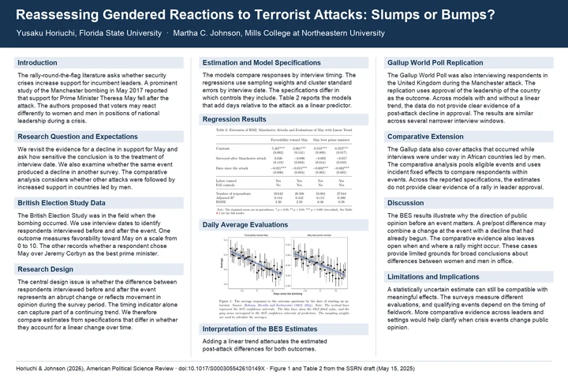
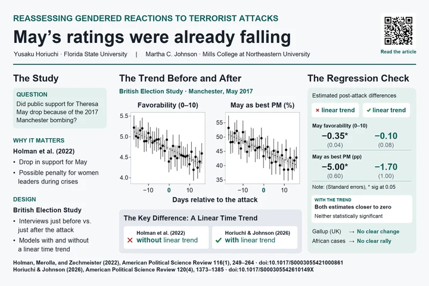

How to Make a Poster
- Author: Yusaku Horiuchi
- Affiliation: Syde P. Deeb Eminent Scholar in Political Science, Florida State University
- Created: November 21, 2026
- Last revised: November 21, 2026
This guide helps doctoral students and early-career researchers design, print, and present a research poster.
In less than a minute, someone looking at your poster should be able to tell what you studied and find something to ask about.
At a busy session, people often join while you’re answering someone else’s question. Give them enough to piece together your study without hearing your opening explanation. Make your question, why it matters, the design, and the main result easy to find.
⚠️ Never assume that someone will spend 10-15 minutes to read your poster.
Two Posters, One Study
Click either poster to open the full-size image in a new tab.
A Bad but Common Example

A Better Poster

These examples are based on Horiuchi and Johnson (2026). See also the SSRN draft. The adapted figure is licensed under CC BY 4.0.
Step 1. Define the Message
Before opening a template, write a short answer to each question.
- What do you want to know? State your research question in one sentence.
- Why does it matter? Name the gap or puzzle that motivates the study.
- What do you expect, and why? Give the reasoning and state the hypothesis as a concrete comparison.
- How will you find out? Say what you studied, compared, and measured.
- What did you find? Choose the result that most directly answers the question.
Pick one takeaway and give the evidence for it the most space. If you don’t have results yet, see Presenting a Pre-Analysis Plan below.
Step 2. Lay Out the Poster
- Give readers a place to start. Put the title, authors, and affiliations at the top. If the title doesn’t convey your main message, highlight a one-sentence takeaway near the top.
- Write for a quick scan. Use short headings, phrases, and bullets. Use a full sentence only when it adds clarity or impact, as a research question often does. Cut details that readers can see in the figure or that you can explain aloud.
- Show readers where to look. Choose the order that helps readers find the question, design, and main finding quickly, even if it differs from the paper’s section order. Use bullets to group details, arrows to show connections, and bold type or boxes to highlight key information.
- Put the QR code in the upper-right corner. Keep it high enough for people behind the crowd to see and scan it.
Step 3. Make Figures and Tables Easy to Read
- Redesign the main figure for viewing from a distance. Enlarge panel titles, axis labels, and tick labels. Make the groups, outcomes, and units clear. Use labels or symbols alongside color.
- Rebuild the regression table. Show the key estimates and standard errors. Align comparable numbers, use consistent precision, and keep the model labels and order the same wherever they appear.
Presenting a Pre-Analysis Plan
Make the planned design the main visual. Use a flowchart to show the sequence, or put the conditions side by side. For example, show a policy description with and without cost information. Label the shared outcome and planned comparison. Present any pilot findings if available.
Step 4. Prepare the Poster for Printing
- Check the venue specifications. Confirm dimensions, orientation, mounting method, and submission format before setting up your file.
- Test a quick scan. Give someone unfamiliar with the study a few seconds at a realistic viewing distance. Ask what they understood before you explain. Revise what they miss.
- Check the final PDF. Verify dimensions, labels, links, and QR code. Use vector figures when possible.
- Follow the submission instructions. Check any additional requirements from your professor or the event organizers.
Step 5. Present the Poster
Start with the question, point to the main figure, and give the takeaway in not more than a minute. Plan exactly what you’ll say, rehearse it carefully, and commit it to memory.
When someone joins mid-answer, point to the relevant part of the poster. At a natural pause, give a one-sentence recap.
Further Reading
- Carlisle Rainey’s guide to research posters, with Google Slides and Overleaf templates and links to examples.
FSU-Specific Instructions
- Poster size. Use 36 inches wide × 24 inches high, as Carlisle Rainey recommends.
- Draft PDF. Send me a draft at least one week before the final PDF deadline below.
- Final PDF. Send me the final version no later than 48 hours before the poster session starts.
- Printing and pickup. I’ll submit one print order for all posters to The UPS Store on campus. The department will cover the cost. I may ask a student in the class to pick up the posters at 104 N. Woodward Ave., on the first floor of the Woodward Parking Garage, across from the Student Union.